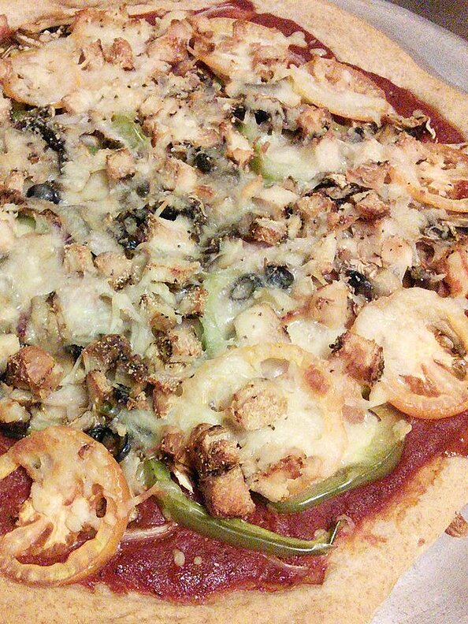

Whole Wheat Pizza Dough
Index of recipes

Description
This easy recipe is delicious and good for all the family.
Time that takes
It takes 15 minutes to prepare all the ingredients, then
1 hour to do the cooking. That leaves with
a total time of 1 hours and 15 mins for 6 servings of this delicious
plate.
Ingredients
- 1 cup whole wheat flour
- 1 cup all-purpose flour
- 1 ¼ teaspoons instant yeast
- ½ teaspoon white sugar
- ¼ teaspoon salt
- ¾ cup warm water
- 2 tablespoons olive oil
Steps
- Mix whole wheat flour, all-purpose flour, yeast, sugar, and salt in a large bowl using a spoon.
Pour in water and oil; mix until dough no longer sticks to the bowl.
Turn dough onto a lightly floured surface and knead for 5 to 8 minutes.
-
Mix whole wheat flour, all-purpose flour, yeast, sugar, and salt in a large bowl using a spoon. Pour in water and oil; mix until dough no longer sticks to the bowl.
Turn dough onto a lightly floured surface and knead for 5 to 8 minutes.